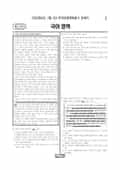

문제지

시험지 만들기준비하고 있어요. 열리면 아래 탭에서 바로 쓸 수 있어요.
전국연합학력평가 · 시·도교육청 주관
2025년 7월 고3 학력평가 국어 화법과작문 1등급컷은 원점수 94점(비공식), 표준점수 최고점은 139점입니다.
원점수 1등급컷은 공식 발표값이 아니라 EBSi·입시기관 값입니다. 등급별 값은 등급컷 표, 출처 구분은 데이터 원칙에 있습니다.

| 등급 | 표준점수 이상 | 인원(명) | 비율 |
|---|---|---|---|
| 1 | 131 | 14,853 | 4.83% |
| 2 | 125 | 22,599 | 7.35% |
| 3 | 117 | 38,175 | 12.41% |
| 4 | 108 | 47,764 | 15.53% |
| 5 | 95 | 64,585 | 21% |
| 6 | 81 | 51,575 | 16.77% |
| 7 | 72 | 37,635 | 12.24% |
| 8 | 68 | 20,003 | 6.5% |
| 9 | 53 | 10,335 | 3.36% |
국어 영역 전체 응시자 기준이에요.
출처: 시·도교육청이 공개한 전국연합학력평가 성적 분석·통계자료(공개 자료 보기).
EBSi 응답자 기준으로 가장 많이 틀린 문항은 30번(3점)이고, 오답률은 69.5%입니다. 상위 15문항 중 2문항은 정답보다 한 오답을 고른 사람이 더 많았습니다(30번: 정답 ⑤ 30.5%, ③ 40.5%). 오답률 50%를 넘은 문항은 5개입니다.
| 순위 | 문항 | 배점 | 오답률 | 정답 | 많이 고른 오답 |
|---|---|---|---|---|---|
| 1 | 30번 | 3점 | 69.5% | ⑤ | ③ 40.5% |
| 2 | 12번 | 3점 | 68.7% | ④ | ③ 33.9% |
| 3 | 11번 | 2점 | 61.7% | ① | ⑤ 16.4% |
| 4 | 8번 | 3점 | 52.3% | ⑤ | ③ 14.5% |
| 5 | 17번 | 3점 | 50.4% | ③ | ④ 20.1% |
| 6 | 10번 | 2점 | 49.8% | ① | ② 16.7% |
| 7 | 26번 | 2점 | 48.5% | ② | ④ 18.9% |
| 8 | 34번 | 3점 | 46.7% | ② | ① 14.2% |
| 9 | 6번 | 2점 | 44.7% | ④ | ② 23.6% |
| 10 | 15번 | 2점 | 42.6% | ⑤ | ③ 19.4% |
| 11 | 14번 | 2점 | 42% | ① | ③ 12.8% |
| 12 | 33번 | 2점 | 40.5% | ② | ① 15.3% |
| 13 | 25번 | 3점 | 40.3% | ④ | ⑤ 12.7% |
| 14 | 16번 | 2점 | 36.9% | ⑤ | ③ 12.8% |
| 15 | 18번 | 2점 | 36.4% | ② | ④ 19.7% |
EBSi 가채점 응답자 기준 · 전 문항 중 오답률 상위 15문항
출처: EBSi 역대 등급컷·오답률 공개 화면. 가채점에 참여한 EBSi 이용자 응답이라 전체 응시자 정답률과는 다를 수 있습니다.
발행 기관: 시·도교육청(전국연합학력평가). 파일 위치: 이 사이트가 보관한 사본. 저작권은 발행 기관에 있습니다. 원본과 다르거나 게시 중단이 필요하면 연락처로 알려 주세요. 등급컷 출처 구분은 데이터 원칙에서 설명합니다.
막대 색은 역대 대비 난이도 · 진한 막대가 이 시험 · 막대를 누르면 그 회차로 이동
| 회차 | 1등급컷 | 표점 최고 | 1등급 표점 | 난이도 |
|---|---|---|---|---|
| 7월 학평2025년 고3이 시험 | 94 | 139 | 131 | 쉬움 |
| 5월 학평2025년 고3 | 98 | 134 | 130 | 매우 쉬움 |
| 3월 학평2025년 고3 | 80 | 159 | 136 | 매우 어려움 |
| 10월 학평2024년 고3 | 97 | 134 | 129 | 쉬움 |
| 7월 학평2024년 고3 | 96 | 135 | 130 | 쉬움 |
| 3월 학평2024년 고3 | 86 | 150 | 133 | 어려움 |
| 10월 학평2023년 고3 | 98 | 128 | 126 | 매우 쉬움 |
| 7월 학평2023년 고3 | 90 | 141 | 132 | 어려움 |
| 4월 학평2023년 고3 | 98 | 137 | 130 | 매우 쉬움 |
| 3월 학평2023년 고3 | 89 | 146 | 133 | 보통 |
공통과목 독서는 주희가 배움의 방법 중 제일로 꼽은 궁리(窮理)와 독서법을 다룬 독서론(1~3번), (가) 인간을 로고스를 가진 정치적 동물로 본 아리스토텔레스와 (나) 말과 이성에 우위를 둔 서구 전통 철학을 비판한 데리다를 묶은 주제 통합형 인문 지문(4~9번), 교량의 보에 긴장력을 가해 하중을 견디게 하는 원리를 다룬 기술 지문(10~13번), 운전면허 제도와 관련된 도로교통법을 다룬 법 지문(14~17번)으로 구성되었습니다.
독서에서 가장 많이 틀린 12번(3점, 68.7%)은 하중이 주어진 교량 보의 설계 상황을 다룬 <보기>를 지문에 비추어 판단하는 문항, 11번(61.7%)은 두 방식의 공통점을 묻는 문항이었습니다. 인문 지문의 8번(52.3%)은 절대 왕권 체제였던 나라의 혁명 상황을 다룬 <보기>에 두 관점을 적용하는 문항이었습니다.
문학은 이청준의 소설 「불 머금은 항아리」(18~21번), 권섭 「독자왕유희유오영」·허전 「고공가」와 이옥의 「지주부」를 묶은 갈래 복합(22~26번), 김수영 「긍지의 날」과 강은교 「섬」을 묶은 현대시(27~30번), 작자 미상의 고전소설 「설홍전」(31~34번)으로 구성되었습니다.
이 회차 국어에서 가장 많이 틀린 30번(3점, 69.5%)은 두 시가 대립 관계를 이분법이 아닌 순환과 연결의 관계로 파악한다는 <보기>로 작품을 감상하는 문항으로, 응답의 40.5%가 한 오답을 골랐습니다.
화법과 작문은 석굴암을 소개하는 학생의 발표(35~37번), 동아리 학생들의 대화와 이를 바탕으로 쓴 교지 초고(38~42번), 지역 신문 독자란에 빈집 문제를 다룬 글의 초고(43~45번)로 구성되었습니다. 화법과 작문 선택 문항 가운데 오답률 50%를 넘은 문항은 없었습니다.
화법과 작문 응시자에게는 선택 문항 가운데 오답률 50%를 넘은 문항이 없었기 때문에, 등급은 사실상 공통 독서 12번과 문학 30번에서 갈렸습니다. 두 문항을 다시 풀며 <보기>나 지문의 기준을 사례에 옮기는 단계에서 어디서 어긋났는지 확인해 보는 것이 좋습니다.